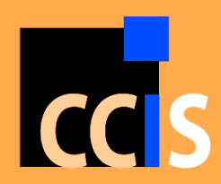

Call for Papers
The way services and information are currently delivered to a multitude of end-users is changing impressively thanks to the availability of advanced software systems built on new technologies and infrastructures (such as IoT connectivity and smart devices), and exposing complex computational models (such as mobile, cloud, autonomic, and adaptive computing). The development of these Advanced Computing Systems requires advanced architectural design exploiting the integration of heterogeneous architecture description languages, architectural patterns, qualitative and quantitative assessment of architectures, and solutions already individually tested in specific contexts. Moreover, the employment of the emerging technologies and computational models may unexpectedly expose the user to undesired consequences, such as threats to confidentiality and even financial or health danger; therefore, assuring the correct behavior and dependability of such systems is a very challenging issue that requires rigorous modeling and formal analysis techniques. The main goal of the workshop is to foster integration between the formal methods and the software architecture communities with the purpose to promote the connection between the two more carefully than is currently.
Specific topics include, but are not limited to:
- Application of formal/semi-formal methods in:
- Linking requirements engineering and software architectures
- Architecture design, validation and verification, quality analysis and evaluation
- Architecture description languages and meta-models
- Architecture-centric model driven engineering
- Architecture-centric process models and frameworks
- Architectural patterns, styles and tactics, viewpoints and views
- Architecture transformation and refinement, architecture-based synthesis
- Architecture-based evolution
- Integrating formal/semi-formal methods and architecture-centric software engineering for:
- Service-Oriented Architectures (SOA), Web services, and Microservices
- reconfigurable and self-adaptive systems
- mobile applications
- cloud applications
- mobile cloud applications
- IoT applications
- smart systems
- ultra-large scale, long-lived systems and systems-of-systems
- cyber-Physical Systems
- etc.
- Formal/semi-formal analysis and architecture-centric software engineering provided as a service on the Cloud or in an IoT infrastructure.
- Case studies and experience reports in using formal approaches in software architecture design and analysis.
Researchers, educators, practitioners, tool developers and users, and technology transfer experts are all welcome.
Workshop papers must be written in English and prepared following the Springer Communications in Computer and Information Science (CCIS) Guidelines: https://www.springer.com/series/7899. Submissions must be uploaded in PDF format through the workshop submission website hosted by EasyChair.
We solicit the following contribution types:
- Full papers about original research and/or case studies (between 12 & 14 pages, Springer CCIS format).
- Short papers (up to X pages, Springer CCIS format) describing: new ideas/work-in-progress, or techniques and/or newly-developed tools or extensions not fully validated yet, or an industry paper reporting on work or experiences on the application of formal methods and software architectures in industry.
For each accepted paper, at least one of the authors is expected to be present at the workshop and present the paper. All accepted papers will be published in the ECSA 2020 Companion Proceedings by Springer CCIS volume.

- Paper submission: June 24, 2020
- Author notification: July 13, 2020
- Camera-ready version: July 20, 2020
- Workshop date: September 14 & 15, 2020